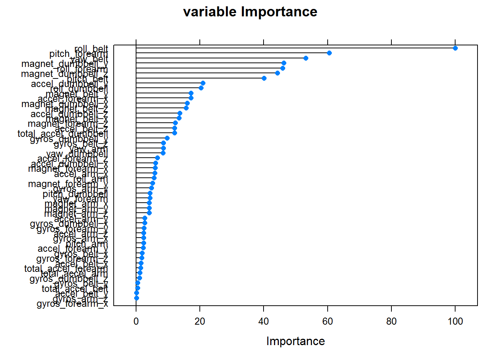

The aim of this project is to build a prediction model to predict the 20 test cases provided to predict the manner in which they did the exercise.
library(caret)## Loading required package: lattice
## Loading required package: ggplot2library(randomForest)## randomForest 4.6-10
## Type rfNews() to see new features/changes/bug fixes.set.seed(1234)#download.file("https://d396qusza40orc.cloudfront.net/predmachlearn/pml-training.csv", destfile = "./training.csv")
#download.file("https://d396qusza40orc.cloudfront.net/predmachlearn/pml-testing.csv", destfile ="./testing.csv")
#read the data into training and testing
training <- read.csv("training.csv")
testing <- read.csv("testing.csv")cleaning data by removing all those columns which have all NA in testing data set. since the test data observations are all NAs for these columns, they would not help in building the prediction model. Note: we are not training on the testing data set, the prediction model is still based on the training data set.
#colNA contains all the columns which have all NA in all the observations
colNA <- colnames(testing[,colSums(is.na(testing)) == nrow(testing)])
#subset new training set so as to remove those columns which are NA
newTraining <- training[, !names(training) %in% colNA]If we take a look at the remaining columns, we would notice that several columns would not help in building the prediction model, to be specific the 1st 7 columns, “X”, user_name, raw_timestamp_part_1 etc
names(newTraining[, 1:7])## [1] "X" "user_name" "raw_timestamp_part_1"
## [4] "raw_timestamp_part_2" "cvtd_timestamp" "new_window"
## [7] "num_window"We could further subset the newTraining data set to remove these useless features, then we will build our model based on these remaining features.
newTraining <- newTraining[, 8:length(colnames(newTraining))]Partition training sets into validation (30%) and training sets (70%)
set.seed(1234)
inTrain <- createDataPartition(y = newTraining$classe, p = 0.7, list = FALSE)
trainingModel <- newTraining[inTrain,]
validationModel <- newTraining[-inTrain,]
obs <- dim(trainingModel)[1]
variables <- dim(trainingModel)[2]There are 13737 obserbations in trainingModel and 53 variables in trainingModel.
Inspired by Quiz 3 Question 5 on variable importance :p i have decided to use random forest’s variable importance to determine which variables are more important and build my prediction model based on these variables. However, feeding all r, variables variables into the model will take very long time (i waited more than 1 hour still not completed), I shall further subset my trainingModel (about 20%) which will be used to build the random forest model.
set.seed(1234)
inTrainModel <- createDataPartition(y = trainingModel$classe, p = 0.8, list = FALSE)
trainingVarImpt <- trainingModel[-inTrainModel,]
trainingRemaining <- trainingModel[inTrainModel,]
#need at least 7mins to complete
varImpModel <- train(classe ~., data = trainingVarImpt, method = "rf")
varImpt <- varImp(varImpModel)
plot(varImpt, main = "variable Importance")
Choosing which variables to be used for modelling. I shall pick those importance which is more than 15% to be used for modelling.
topVarImpt <- varImpt$importance[, 1] >= 15
trainingRemaining <- trainingRemaining[, topVarImpt]
numVarImpt <- dim(trainingRemaining)[2]There are 14 which has more than 15% in the variable importance model
# takes 10 mins to run
finalRFmodel <- train(classe ~. , data = trainingRemaining, method = "rf")predictValidation <- predict(finalRFmodel, validationModel)
confusionResults <- confusionMatrix(predictValidation, validationModel$classe)
confusionResults## Confusion Matrix and Statistics
##
## Reference
## Prediction A B C D E
## A 1669 21 1 0 0
## B 3 1095 12 0 8
## C 2 13 1008 10 6
## D 0 10 5 954 6
## E 0 0 0 0 1062
##
## Overall Statistics
##
## Accuracy : 0.9835
## 95% CI : (0.9799, 0.9866)
## No Information Rate : 0.2845
## P-Value [Acc > NIR] : < 2.2e-16
##
## Kappa : 0.9791
## Mcnemar's Test P-Value : NA
##
## Statistics by Class:
##
## Class: A Class: B Class: C Class: D Class: E
## Sensitivity 0.9970 0.9614 0.9825 0.9896 0.9815
## Specificity 0.9948 0.9952 0.9936 0.9957 1.0000
## Pos Pred Value 0.9870 0.9794 0.9702 0.9785 1.0000
## Neg Pred Value 0.9988 0.9908 0.9963 0.9980 0.9959
## Prevalence 0.2845 0.1935 0.1743 0.1638 0.1839
## Detection Rate 0.2836 0.1861 0.1713 0.1621 0.1805
## Detection Prevalence 0.2873 0.1900 0.1766 0.1657 0.1805
## Balanced Accuracy 0.9959 0.9783 0.9880 0.9927 0.9908accuracy <- confusionResults$overall[1]
#out of sample error aka OSE
OSE <- 1 - as.numeric(accuracy)Based on the validation against those observations chosen for validation, the accuracy is 0.9835174 , which means that the out of Sample error is about 0.0164826 .
answers <- predict(finalRFmodel, testing)
answers## [1] B A B C A E D B A A B C B A E E A B B B
## Levels: A B C D E